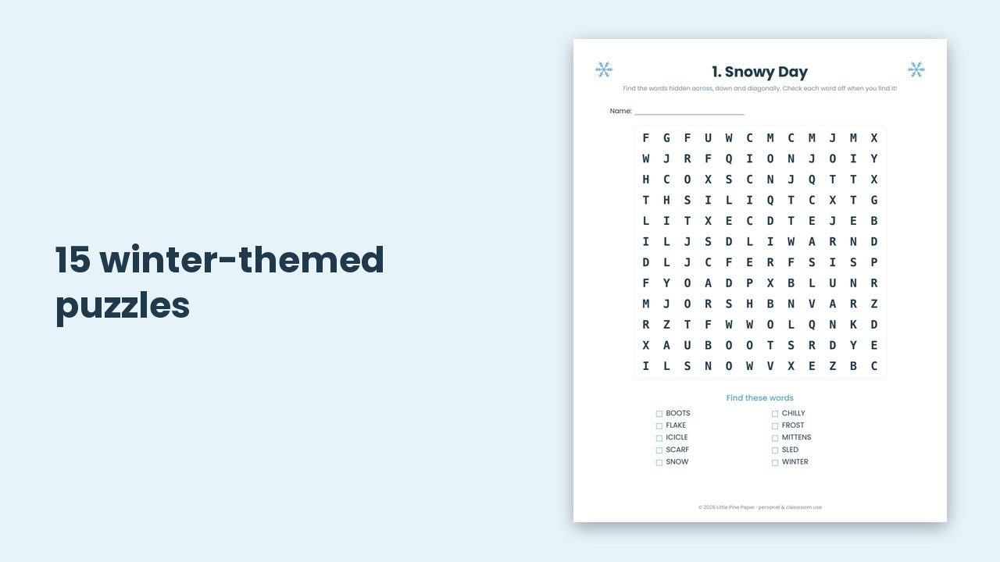
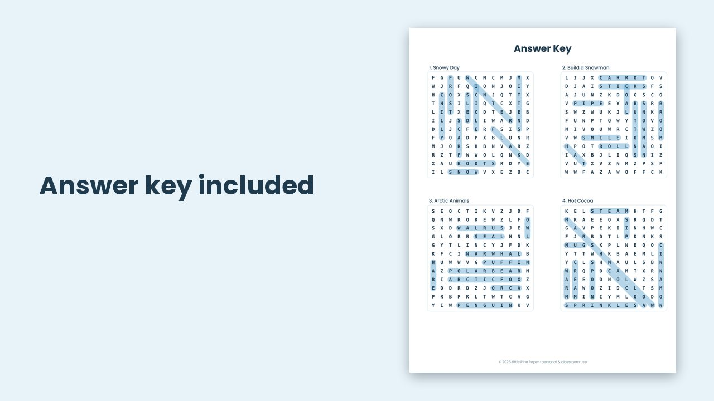

Winter Word Search for Kids - 15 Printable Puzzles for Home or School



Keep the kids entertained during the colder months with this collection of winter-themed word search puzzles designed for children ages 7 to 10.
What's inside: This printable PDF packet includes 15 unique word search puzzles, each featuring a 12x12 grid with 10 hidden words. The words are placed horizontally, vertically, and diagonally, but never backwards. Themes include Snowy Day, Arctic Animals, Hot Cocoa, Winter Sports, Cozy Home, and the Northern Lights. You will also receive a cover page, four answer key pages, and a terms of use page.
How to use: Simply download the files and print the pages at home or at school. The set is provided in both US Letter and A4 sizes to accommodate your local printing standards. These puzzles are ready to use immediately after purchase.
Good to know: This is a digital download; no physical item will be shipped to you. These files are licensed for personal and classroom use. All puzzles are provided in a high-quality PDF format for clear printing.